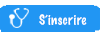

<!DOCTYPE html>
<html>
    <head>
        <title>Test GoogleMaps</title>
    </head>
    <body>
        <div id="mapDiv" style="width: 600px; height: 400px;"></div>
        <script src="https://maps.googleapis.com/maps/api/js?sensor=false"></script>
        <script>
            
            
            // coordonnees
            var champs = new google.maps.LatLng(48.853129, 2.604846);
            var medecin0 = new google.maps.LatLng(48.837056, 2.587057);
            var medecin0_name = "Jenifer Kavas";
            var medecin0_tel = "01.60.37.55.97";
            var medecin1 = new google.maps.LatLng(48.851018, 2.580982);
            var medecin1_name = "Alain Finet" ;
            var medecin1_tel = "01.64.68.03.64" ;
            var medecin2 = new google.maps.LatLng(48.844161, 2.583817);
            var medecin2_name = "Gaudinat Robin" ;
            var medecin2_tel = "01.64.68.42.48" ;
            
            var utilisateur = new google.maps.LatLng(48.8415556, 2.5841022);
            
            var positions = [medecin0, medecin1, medecin2];
            var names = [medecin0_name, medecin1_name, medecin2_name];
            var tels = [medecin0_tel, medecin1_tel, medecin2_tel];
            var times = ["10", "15", "24"];
            
            
            // recuperation de l'element HTML sur lequel afficher la carte
            var mapCanvas = document.getElementById("mapDiv");
            
            // creation effective de la carte
            var mapOptions = {
                center: champs,
                zoom: 13,
                mapTypeId: google.maps.MapTypeId.ROADMAP
            };
        
        
        var map = new google.maps.Map(mapCanvas, mapOptions);
        
        // definition du marqueur et ajout a la carte
        
        var imageMarqueur = {
            url: "MarqueurMedecin.png",
            size: new google.maps.Size(30, 44),
            anchor: new google.maps.Point(1, 10)
        };
        
        var imageMarqueurUtilisateur = {
            url: "MarqueurPosition.png",
            size: new google.maps.Size(29, 40),
            anchor: new google.maps.Point(1, 5)
        };
        
        var ombreMarqueur = {
            url: "MarqueurShadow.png",
            size: new google.maps.Size(50, 40),
            anchor: new google.maps.Point(1, 5)
        };
        
        var markOptionUtilisateur= {
            map: map,
            position: utilisateur,
            icon: imageMarqueurUtilisateur,
            shadow: ombreMarqueur
        }
        
        
        
        function markOption(medecin) {
            var markOptions = {
                map: map,
                position: medecin,
                icon: imageMarqueur,
                shadow: ombreMarqueur
            }
            
            return markOptions;
        }
        
        var marks = [new google.maps.Marker(markOption(medecin0)),new google.maps.Marker(markOption(medecin0)),new google.maps.Marker(markOption(medecin0))];
        for( var i=0; i<marks.length; i++)
        {
            marks[i] = new google.maps.Marker(markOption(positions[i]));
        }
        
        // marqueur de l'utlisateur
        var marku = new google.maps.Marker(markOptionUtilisateur);
        
        //Remplir les bulles d'informations
        
        function setText(name, tel, n) {
            // definition de la fenêtre affichee lors d'un clic sur le marqueur
           
            
            var infoHTML = ' <B>name</B> <br>'  +
            ' <center>tel1</center>  <br>' +
             ' <FONT color=red> <B> wait1 min </B> </FONT> <br>' +
             '<a href=map2.html></a>';
        
        
            infoHTML = infoHTML.replace("name", name);
            infoHTML = infoHTML.replace("tel1", tel);
            infoHTML = infoHTML.replace("wait1", n);
            var infoWindow = new google.maps.InfoWindow({ content: infoHTML });
            
            return infoWindow;
        }

        
        function affiche_clic (marqueur, info) {
            google.maps.event.addListener(marqueur, 'click', function() {
                                          info.open(map, marqueur);
                                          });
                                          
        }
        
        
        //Affichage de l'information au clic sur le marqueur
        for(var i=0; i<marks.length; i++)
        {
            affiche_clic(marks[i], setText(names[i], tels[i], times[i]));
        }
        
        
        
            </script>
    </body>
</html>
